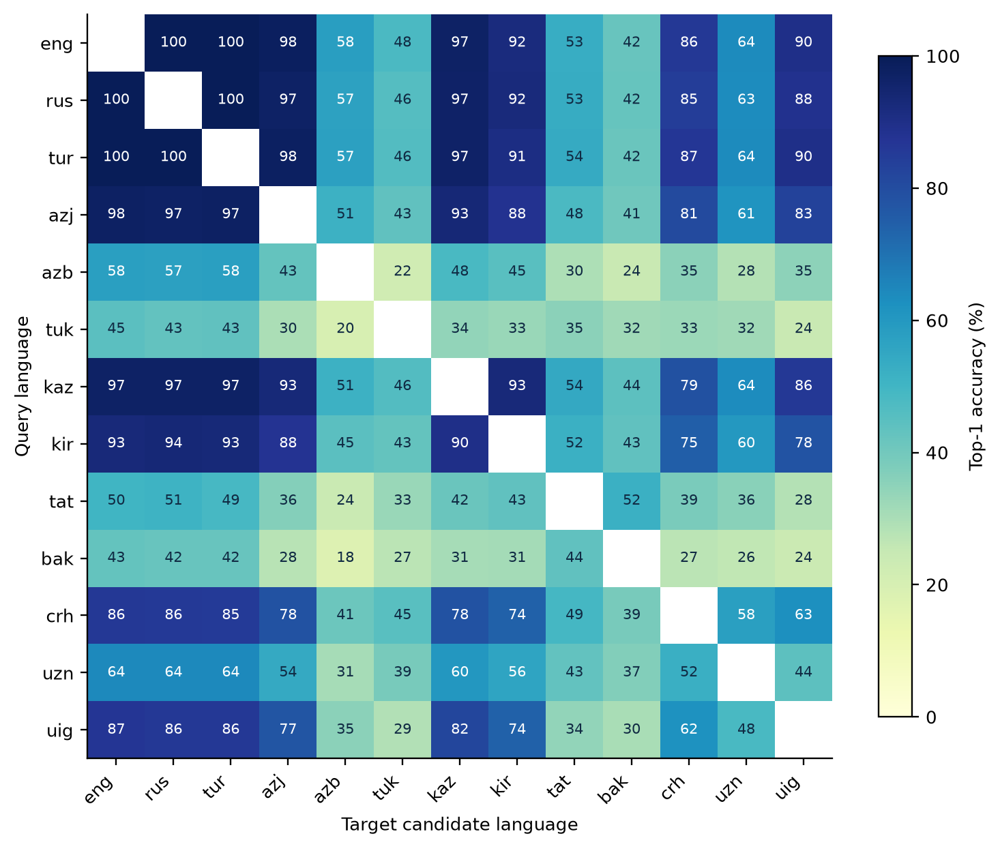
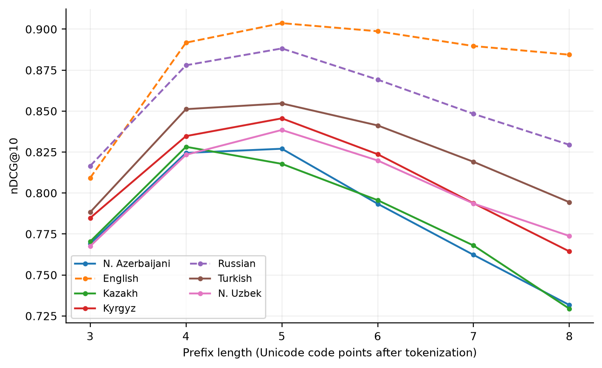
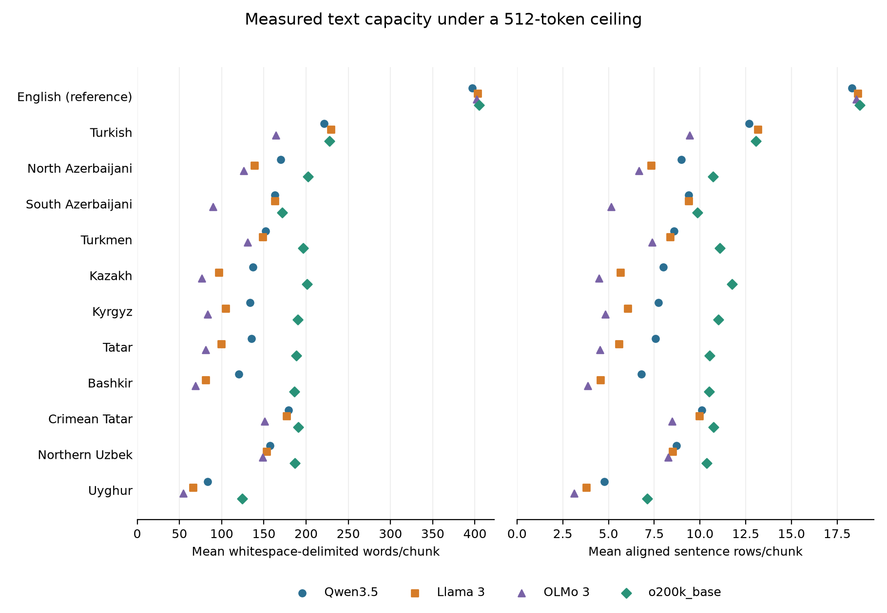

13 Meaning: Embeddings, Semantic Resources, and Retrieval
After reading this chapter, you will be able to:
- Survey the lexical-semantic resources for Turkic languages (WordNets, PropBanks, discourse and coreference corpora) and identify the gaps
- Explain how agglutination and the use of several scripts affect word and sentence embeddings
- Evaluate multilingual sentence encoders on Turkic languages with parallel-sentence retrieval and semantic similarity
- Choose how to reduce word forms (surface form, prefix, stem, lemma, subword) for keyword search in an agglutinative language
- Design a retrieval-augmented generation system for a multilingual collection, such as Turkic-language questions over Russian documents
- Account for script-dependent tokenisation when splitting documents into chunks
Chapter 12 introduced pretrained models and adaptation. This chapter turns to semantic resources and retrieval: representing text, comparing meanings and finding relevant passages. It then connects retrieval to generation, which Chapter 14 examines in more detail.
Inflection and script variation both affect matching. Turkish ev ‘house’, evler and evimiz are related forms, but exact matching treats them as different strings. Script differences can also hide shared forms (Section 3.6). The chapter compares lexical and dense retrieval, including queries and documents in different languages.
13.1 Lexical-Semantic Resources
Lexical-semantic resources describe what words mean and how they relate: synonymy and hypernymy in a WordNet, predicate–argument structure in a PropBank, relations between clauses in a discourse treebank. The selected inventory below includes several Turkish resources, WordNets for Tatar and Uzbek, and a Kyrgyz word-similarity set (Table 13.1):
- WordNet. The Turkish WordNet KeNet (Bakay et al. 2021), TatWordNet for Tatar (Kirillovich et al. 2021), and UZWORDNET for Uzbek (Agostini et al. 2021).
- Semantic roles. The Turkish PropBank (Şahin and Adalı 2018) and TRopBank, published as Turkish PropBank v2.0 (Kara et al. 2020).
- Discourse and coreference. The Turkish Discourse Bank (Zeyrek, Demirşahin, and Çallı 2013) and the Marmara Turkish Coreference Corpus (Schüller et al. 2017).
- Inference and similarity. NLI-TR (Budur et al. 2020) and STSb-TR (Beken Fikri, Oflazer, and Yanıkoğlu 2021), both machine-translated from English datasets.
Other lexical sources include Wiktionary, the Apertium bilingual dictionaries used by the translation pairs in Chapter 10, and lemma/POS outputs from Chapter 6. These supply lexical features. Sense relations, coreference and semantic roles require their own annotation.
| Language | Type | Resource | Size |
|---|---|---|---|
| Turkish | WordNet | KeNet (Bakay et al. 2021) | 76,757 synsets; linked to Princeton WordNet |
| Turkish | Semantic roles | Turkish PropBank (v1) (Şahin and Adalı 2018) | Semantic roles of the arguments in a Turkish dependency treebank, using framesets of root verbs; SRL baseline 79.10 F1 |
| Turkish | Semantic roles | TRopBank (Turkish PropBank v2.0) (Kara et al. 2020) | 17,673 verbs |
| Turkish | Discourse relations | Turkish Discourse Bank (Zeyrek, Demirşahin, and Çallı 2013) | Approximately 400,000 words; explicit connectives and arguments |
| Turkish | Coreference | Marmara Turkish Coreference Corpus (Schüller et al. 2017) | 33 documents; 53,925 tokens; 5,170 mentions; 944 chains |
| Turkish | Natural language inference | NLI-TR (SNLI-TR and MultiNLI-TR) (Budur et al. 2020) | 550,152 + 392,702 training pairs (machine-translated; sample checked by experts) |
| Turkish | Semantic textual similarity | STSb-TR (Beken Fikri, Oflazer, and Yanıkoğlu 2021) | 5,749 train / 1,500 validation / 1,379 test pairs (8,628 total) |
| Tatar | WordNet | TatWordNet (Kirillovich et al. 2021) | 18,583 synsets; 36,540 lexical entries; 49,525 senses; CC BY-SA 4.0 |
| Uzbek | WordNet | UZWORDNET (Agostini et al. 2021) | 28,140 synsets; 64,389 senses; 20,683 words; est. accuracy 75.98% |
| Kyrgyz | Word similarity | HJ-Ky-0.1 (silver-standard word-similarity set) (Alekseev and Kabaeva 2024) | 361 word pairs; inherited Russian similarity scores |
TRopBank’s paper reports 17,673 verbs; Chapter 9 counts 17,531 framesets in the inspected release. The two figures come from different source descriptions and cannot be swapped for each other. A frame inventory also does not substitute for sense-annotated sentences.
13.2 Word Embeddings and Morphology
Whole-word static embeddings assign a vector to each word form. Rare inflected forms may have little training evidence. Character n-gram embeddings share information across forms and can construct vectors for unseen words; useful task performance still needs to be tested. Lemma-based embeddings instead collapse forms to an analyser’s selected lemma, losing explicit inflectional distinctions and inheriting analysis errors.
Static embeddings for several Turkic languages can be aligned into a shared space with a bilingual dictionary. Kuriyozov, Doval, and Gómez-Rodríguez (2020) built new monolingual embeddings and bilingual dictionaries for Turkish, Uzbek, Azerbaijani, Kazakh and Kyrgyz and aligned the embedding spaces with established, weakly supervised mapping methods. In bilingual dictionary induction, the authors report that the embeddings of the lower-resourced languages benefit from alignment with a closely related, better-resourced language; in Uzbek sentiment analysis, aligned embeddings gave a slight improvement over monolingual ones.
13.3 Sentence Encoders
13.3.1 Models
Sentence encoders map text to vectors for comparison. Whether vector similarity reflects the intended meaning or relevance must be tested. Four multilingual model families are:
- LaBSE (Feng et al. 2022), trained on translation pairs;
- LASER3 (Heffernan, Çelebi, and Schwenk 2022), with encoders for low-resource languages;
- multilingual E5 (Wang et al. 2024);
- BGE-M3 (Chen et al. 2024).
TurkicNLP adds a fifth option: sentence vectors from the encoder of NLLB-200, which was trained on translation between 200 languages, including the eleven Turkic varieties of FLORES-200 (Table 10.3):
import numpy as np
import turkicnlp
def embed(lang, text):
return np.array(turkicnlp.Pipeline(lang, processors=["embeddings"])(text).embedding)
tr = embed("tur", "Bugün hava çok güzel.")
kk = embed("kaz", "Бүгін ауа райы өте жақсы.")
print(tr @ kk / (np.linalg.norm(tr) * np.linalg.norm(kk))) # cosine similarityIn real use, build each language’s pipeline once and reuse it.
Training coverage differs across encoders. LaBSE’s 109 languages include Turkish, Azerbaijani, Kazakh, Kyrgyz, Uzbek, Turkmen, Tatar and Uyghur, but exclude Bashkir, Chuvash and Sakha (Feng et al. 2022). The LASER repository lists a separate LASER3 encoder for each of the eleven Turkic varieties in FLORES-200.
Multilingual E5 starts from XLM-R and lists support for its 100 languages. Its Turkic members are Turkish, Azerbaijani, Uzbek, Kazakh, Kyrgyz and Uyghur (Chapter 12). BGE-M3 extends XLM-R-large to 8,192-token inputs and reports “more than 100 working languages”, without a separate Turkic list (Chen et al. 2024). Models may accept languages outside their documented coverage, but their vectors need direct evaluation. Dedicated Turkish encoders are also evaluated on TR-MTEB, the Turkish version of the MTEB embedding benchmark (Baysan and Gungor 2025).
13.3.2 Evaluation
Three kinds of evaluation are available for Turkic languages:
- Semantic textual similarity. Kardeş-NLU includes an STS task for Azerbaijani, Kazakh, Kyrgyz, Uzbek, and Uyghur (Senel et al. 2024): 800 test pairs per language, translated from English STS pairs that keep their English gold scores. In Exercise 3, the NLLB encoder has the highest point estimates among the three tested systems for Kazakh, Kyrgyz, Uzbek and Uyghur (Spearman’s ρ 0.58–0.75) and the XLM-R paraphrase encoder for Azerbaijani, while the two paraphrase encoders lead on the English originals (0.83–0.84). TR-MTEB includes Turkish similarity and retrieval tasks (Baysan and Gungor 2025).
- Natural language inference. Kardeş-NLU and the Turkish part of XNLI test entailment, contradiction and neutrality (Chapter 15). Evaluating an encoder on this task needs a declared classifier or scoring method; cosine similarity alone does not distinguish those relations.
- Parallel-sentence retrieval. Given a sentence in one language, find its translation among all sentences in another. FLORES-200 provides the same 1,012 test sentences in eleven Turkic varieties (Table 10.3), so it supports a full matrix of language pairs within the family. What it tests is translation matching. General search relevance is a different question.
13.3.3 Measured native-script sentence retrieval
The October empirical suite evaluates two released paraphrase encoders, paraphrase-multilingual-MiniLM-L12-v2 and paraphrase-xlm-r-multilingual-v1, on original FLORES-200 devtest (NLLB Team et al. 2024). Each of thirteen varieties supplies 1,012 queries against all 1,012 sentences in each other variety: 156 directed comparisons per encoder, 312 in total. The release’s aligned row order is retained and its files are checksummed; this is separate from the FLORES+ ID-based loader in the hands-on section.
Both pinned checkpoints use attention-mask mean pooling, L2 normalisation, cosine similarity and their configured 128-token ceiling. Per-language truncation counts are saved, so this is a comparison of the complete encoder configurations rather than unlimited-context representations. Exact duplicate target strings count as additional positives; top-score ties within \(10^{-6}\) receive fractional credit instead of favouring an earlier row.
run_bitext.py; NLLB Team et al. (2024).
| Query variety | MiniLM (%) | XLM-R (%) |
|---|---|---|
| English | 54.7 | 77.3 |
| Russian | 54.0 | 76.7 |
| Turkish | 54.1 | 77.1 |
| N. Azerbaijani | 39.4 | 73.5 |
| S. Azerbaijani | 31.4 | 40.3 |
| Turkmen | 23.8 | 33.6 |
| Kazakh | 31.1 | 75.1 |
| Kyrgyz | 35.3 | 71.0 |
| Tatar | 30.2 | 40.2 |
| Bashkir | 27.5 | 31.7 |
| Crimean Tatar | 44.8 | 65.2 |
| N. Uzbek | 32.8 | 50.7 |
| Uyghur | 18.1 | 60.9 |

The equally weighted mean over directed pairs is 36.70% for MiniLM and 59.49% for XLM-R (run_bitext.py). These descriptive scores do not isolate script, genealogy or training exposure. The original release also contains spacing anomalies in South Azerbaijani, documented in Chapter 4; all rows are retained. There is no independent pretraining-overlap audit, and semantically equivalent nonidentical alternatives have not been manually labelled. Exercise 1 adds CTS conditions and the NLLB encoder on a different FLORES-200 sample; independent evaluation material is still lacking.
13.3.4 Script and morphology in embedding space
Compare native text with the toolkit’s common-script representation (CTS; Section 3.6) on the same retrieval task. Conversion changes tokenisation and the model’s input distribution. The direction of any benefit cannot be inferred from shared letters alone.
Exercise 1 uses 1,004 SIB-200 sentences derived from FLORES-200 (Adelani et al. 2024). For Kazakh→Kyrgyz, converting both sides to CTS reduces top-1 accuracy from 93.7% to 46.1% with the XLM-R paraphrase encoder and from 99.6% to 46.0% with NLLB. MiniLM rises from 41.7% to 45.4%. These outcomes do not identify the mechanism behind the changes.
The exercise uses 128-token limits for the paraphrase encoders and 512 for NLLB, retains the original NLLB language token after conversion, and resolves score ties by the first candidate. It sorts each language’s rows by ID but does not perform the hands-on’s explicit alignment checks. These protocol differences matter when comparing it with the full FLORES baseline. NLLB’s 98.9–100% native-script scores motivate an independent evaluation, yet high scores and FLORES’s origin together still fall short of proving contamination. LaBSE, LASER3, E5 and BGE-M3 were not run here.
13.4 Keyword Search in Agglutinative Languages
13.4.1 The problem
Keyword search ranks documents by the terms they share with the query, weighted by how rare each term is (BM25 is the standard formula). A query ev fiyatları ‘house prices’ should match a document containing evlerin fiyatı ‘the price of the houses’. With exact surface-word matching, neither query word matches either document word. Five representations of word forms before indexing are available:
| Method | Example: evlerimizden | Needs |
|---|---|---|
| Surface form (lower-cased) | evlerimizden | nothing |
| Fixed-length prefix (first k letters) | evler (k = 5) | nothing |
| Stemmer | ev | a stemmer for the language |
| Lemma from the analyser | ev | a morphological analyser |
| Subword units | ev ##ler ##imiz ##den (depends on the model) | a subword vocabulary |
Lower-casing itself needs care: Turkish and Azerbaijani have dotted and dotless i (İ/i, I/ı), and locale-independent lowercasing may not preserve the intended distinctions (Section 3.3).
Prefix truncation is a cheap baseline motivated by Turkish retrieval work (Can et al. 2008). Choose k on development relevance judgements; truncation can merge unrelated roots as well as recover inflections. The result for one collection is not a universal adequacy guarantee.
Exercise 2 searches 825,309 Kazakh Wikipedia passages for 1,929 KazQAD test questions, using BM25 with \(k_1=1.2\) and \(b=0.75\) (Yeshpanov et al. 2024). Surface forms score 0.140 nDCG@10. Five-letter prefixes score 0.198, context-free Apertium lemmas 0.200 and Glot500 subwords 0.204. Prefix length was selected on 548 validation questions before testing.
Paired sign-flip tests compare each alternative with surface forms over the 1,929 test questions. None of 10,000 random draws reaches the observed absolute gain for any alternative. The two-sided Monte Carlo estimate is therefore \(p \le 1/10{,}001 \approx 10^{-4}\), rather than exactly zero. The comparisons remain clear after Bonferroni correction for six alternatives: four prefix lengths, lemmas and subwords. Questions are the sampling unit, so these tests support conclusions about this question set and collection.
The tests do not distinguish the three leading alternatives from one another: lemma vs. prefix, subword vs. prefix and subword vs. lemma give \(p = 0.63\), \(0.18\) and \(0.38\), respectively. Their relative performance stays unresolved, which is different from showing that they are equivalent.
Apertium returns analyses for 82.1% of the collection’s word tokens. Some queries losing retrieval accuracy contain merged or ambiguous lemma forms: жүзін and жүзіп, for example, both map to жүз. They are candidates for manual error analysis; on their own they do not explain the rank change. Dense and hybrid retrieval were not run on this collection.
import turkicnlp
# Rule-based tokenizer and Apertium lemmas: fast, no neural model. For Kazakh,
# processors=["tokenize", "lemma"] with the default backends gives Stanza lemmas instead.
nlp = turkicnlp.Pipeline("kaz", processors=["tokenize", "morph"], tokenize_backend="rule", morph_backend="apertium")
def index_terms(text: str, mode: str = "lemma", k: int = 5) -> list[str]:
if mode not in {"surface", "prefix", "lemma"} or k < 1:
raise ValueError("invalid mode or prefix length")
words = [w for w in nlp(text).words if w.upos != "PUNCT"]
if mode == "surface":
return [w.text.lower() for w in words]
if mode == "prefix":
return [w.text.lower()[:k] for w in words]
return [(w.lemma if w.lemma and w.lemma != "_" else w.text).lower() for w in words] # unknown words keep their surface form
query = "Мектептерімізден кітаптар алдық." # 'We took books from our schools.'
for mode in ["surface", "prefix", "lemma"]:
print(mode, index_terms(query, mode))
# surface ['мектептерімізден', 'кітаптар', 'алдық']
# prefix ['мекте', 'кітап', 'алдық']
# lemma ['мектеп', 'кітап', 'ал']The example shows the trade-off in miniature. The five-letter prefix happens to give the right stem for кітаптар ‘books’, cuts мектеп ‘school’ short, and leaves the short verb алдық ‘we took’ unchanged; the analyser gets all three lemmas right. For fair baselines, cache the same token boundaries once; surface/prefix indexing need not run a lemmatiser. Apply the identical normalisation to queries and documents. For Turkish and Azerbaijani, lower-case with turkicnlp.utils.unicode_utils.normalize_turkish_i(text).lower() so that İ and I are handled correctly.
13.4.2 Measured passage-recovery baseline
Belebele supplies questions and translated source passages (Bandarkar et al. 2024). Here it is repurposed as source-passage retrieval, not the benchmark’s multiple-choice task: each of seven languages contributes 900 questions and 488 candidate passages. The gold candidate is the passage attached to that question. Passage links and question numbers are checked for uniqueness and joined across languages. Other potentially relevant passages are not exhaustively judged.
run_retrieval.py; Bandarkar et al. (2024).
| Language | Surface | Prefix 5 | MiniLM | XLM-R |
|---|---|---|---|---|
| N. Azerbaijani | 0.638 | 0.827 | 0.347 | 0.639 |
| English | 0.881 | 0.904 | 0.858 | 0.882 |
| Kazakh | 0.653 | 0.818 | 0.310 | 0.697 |
| Kyrgyz | 0.668 | 0.846 | 0.257 | 0.620 |
| Russian | 0.731 | 0.888 | 0.797 | 0.844 |
| Turkish | 0.744 | 0.855 | 0.789 | 0.850 |
| N. Uzbek | 0.703 | 0.839 | 0.270 | 0.355 |
BM25 uses fixed \(k_1=1.2\), \(b=0.75\), NFC normalisation and Unicode alphanumeric tokens, with Turkish/Azerbaijani case handling. The fixed prefix-five condition clips each token after five code points; it is not a morphological analyser. The dense systems use the same pinned encoders and 128-token ceiling as the sentence experiment. All systems receive the same candidate collection. Metrics average expected rank credit over gold-score ties, including queries with no lexical overlap.

The fixed five-character prefix baseline scores higher nDCG@10 than either dense model in all seven collections. Both dense encoders truncate 1,570 of the 3,416 passage inputs at 128 tokens. Their scores therefore reflect this length limit as well as the learned representations; statistical significance has not been established.
Figure 13.2 tests lengths three through eight on the same test questions. Selecting a length for deployment would require separate development data. These lexical conditions, dense baselines and the script/language probes below make up the 77-condition run. Exercise 2 compares lemmas and subwords on KazQAD; hybrid systems remain untested.
13.5 Retrieval across Scripts and Languages
13.5.1 Across scripts
A Kazakh user may type a query in Cyrillic while some documents are in Latin; an Uzbek user may search in Cyrillic over a collection in Latin. Literal keyword overlap may fall sharply, though names, numbers, shared symbols and mixed-script text can still match. Dense retrieval may partly bridge the gap if the encoder has seen both scripts. Query transliteration is one condition to test (Section 3.4); preserve the original and check ambiguous mappings.
13.5.2 Across languages: Turkic queries and Russian documents
A collection may contain Russian documents that answer questions asked in Kazakh, Kyrgyz or Uzbek. Two candidate designs are:
- Multilingual dense retrieval. Encode the question and the Russian documents with the same multilingual encoder.
- Query translation. Translate the question into Russian (for example with NLLB, Section 10.3) and use Russian keyword or dense search.
Exercise 1 offers a translation-matching diagnostic: the XLM-R paraphrase encoder retrieves the aligned Russian sentence for 97.8% of Kazakh SIB-200 queries, compared with 93.7% for Kyrgyz candidates. MiniLM scores 43.9% on Kazakh→Russian. Matching translations is different from finding an answer passage in an independently collected Russian corpus. Query translation and hybrid retrieval remain untested here.
13.5.3 Measured script and language probes
The Uzbek script probe keeps the 488 Latin candidate passages fixed and transforms the same 900 questions with the recorded toolkit Latin→Cyrillic mapping. A third condition converts those generated questions back to Latin. This is a synthetic query transformation, with source hashes retained; it has not been validated by native speakers and does not represent a naturally occurring Cyrillic query collection.
run_retrieval.py and prepare_script_probe.py; Bandarkar et al. (2024).
| Query condition | BM25 | MiniLM | XLM-R |
|---|---|---|---|
| Original Latin | 0.703 | 0.270 | 0.355 |
| Synthetic Cyrillic | 0.028 | 0.110 | 0.172 |
| Round-trip Latin | 0.702 | 0.269 | 0.354 |
BM25 nDCG@10 falls from 0.703 to 0.028 with Cyrillic queries and returns to 0.702 after round-trip conversion. Both dense models also lose accuracy. This result measures sensitivity to the chosen mapping; meaning preservation needs a separate review.
run_retrieval.py; Bandarkar et al. (2024).
| Question → passages | MiniLM | XLM-R |
|---|---|---|
| Kazakh → Russian | 0.402 | 0.681 |
| Russian → Kazakh | 0.607 | 0.763 |
| Turkish → English | 0.772 | 0.842 |
| N. Uzbek → Russian | 0.286 | 0.444 |
The cross-language probe joins the same question/source-passage identities across translations and searches the target-language collection directly with each dense encoder. It includes Kazakh→Russian, Russian→Kazakh, Turkish→English and Uzbek→Russian. No query-translation or hybrid retriever is run here, and performance on translated parallel passages need not transfer to independent Russian documents. Human mapping checks and comparisons with query translation and hybrid retrieval remain to be completed.
13.6 Retrieval-Augmented Generation for Turkic Languages
Retrieval-augmented generation (RAG) gives a language model retrieved passages as context and asks it to answer from them. Three design decisions connect the earlier sections.
A token budget holds different amounts of text. Language variety, writing system, tokeniser and the text itself affect capacity. Isolated-word fertility (Table 7.1) and corpus characters per token (Figure 4.2) provide useful diagnostics. To estimate document capacity, measure running text directly; separating script effects requires a controlled comparison.
Table 13.7 and Figure 13.3 report the sentence-stream packing experiment on the original FLORES-200 devtest release, using 1,012 aligned sentence rows for each of 11 Turkic varieties plus English (NLLB Team et al. 2024). This release is distinct from the subsequently revised FLORES+ dataset. The tokenisers are pinned snapshots of Qwen3.5-35B-A3B-FP8, Meta-Llama-3-8B and Olmo-3-1025-7B, plus o200k_base; the experiment records their hashes and library versions. No model weights, chat templates or special tokens are used.
The packing procedure takes sentences in release order, trims outer whitespace and joins them with one space. It re-tokenises each proposed chunk as a whole. If the next sentence would push the chunk beyond 512 tokens, it closes the chunk and starts another. Every individual sentence fits; the largest takes 388 tokens.
Means cover closed chunks and exclude each language/tokeniser’s final tail. The saved audit still accounts for all 1,012 rows, including the tail. Here, “words” means nonempty whitespace-delimited units and “sentences” means aligned dataset rows.
| Language | Words/chunk | Sentences/chunk | Fill (%) |
|---|---|---|---|
| English | 397–405 | 18.3–18.7 | 96.8–97.4 |
| Turkish | 164–229 | 9.4–13.2 | 94.8–96.5 |
| North Azerbaijani | 126–202 | 6.7–10.7 | 92.2–94.8 |
| South Azerbaijani | 90–172 | 5.2–9.9 | 90.0–94.7 |
| Turkmen | 131–196 | 7.4–11.1 | 93.0–95.6 |
| Kazakh | 77–201 | 4.5–11.7 | 88.7–96.0 |
| Kyrgyz | 83–190 | 4.8–11.0 | 88.8–95.3 |
| Tatar | 81–188 | 4.5–10.5 | 88.6–95.1 |
| Bashkir | 69–186 | 3.9–10.5 | 86.7–94.7 |
| Crimean Tatar | 151–191 | 8.5–10.7 | 93.2–95.5 |
| Northern Uzbek | 149–187 | 8.3–10.4 | 93.8–95.3 |
| Uyghur | 54–124 | 3.1–7.1 | 84.4–92.8 |

On this sample, English holds approximately 397–405 words per closed chunk across tokenisers, Turkish 164–229, Kazakh 77–201, and Uyghur 54–124. Whole-sentence packing leaves unused space: mean utilisation ranges from 84.4% to 97.4% across the 48 language/tokeniser combinations. Thus, the observed capacity reflects both tokenisation and the packing rule. The figure also reports aligned sentence counts so that differences in translated word counts are visible alongside differences in shared sentence coverage.
This experiment measures sentence-stream packing. Chunks may cross the source articles from which FLORES sampled its sentences, so retrieval relevance, chunk coherence and answer quality need separate evaluation (Section 15.1). Translations differ in length, whitespace conventions affect word counts, and the design does not vary language and script independently. In deployment, budget indexing chunks with the embedding tokeniser and final context with the generator’s tokeniser, allowing space for prompts, citations and output.
A separate probe uses the ten longest Kazakh Wikipedia articles of KazQAD (13,700–43,000 words each). A 512-token chunk holds on average 95 words with the Llama 3 tokeniser, 76 with OLMo 3 and 126 with Qwen3.6, against 203 with Glot500’s tokeniser, an encoder-side vocabulary that splits Kazakh far less (Exercise 4). A system that retrieves with one model and generates with another must therefore budget chunks for each tokeniser separately. Whether token-based or sentence-based chunking retrieves better on KazQAD has not been measured.
The answer must stay in the user’s language. Check whether Russian context changes the language of an answer requested in a Turkic language. Evaluate this separately from correctness, using the language-fidelity checks in Section 14.1.
Evaluate each stage. Measure retrieval relevance, answer correctness, citation support, language fidelity and abstention on unanswerable questions separately. Retain document provenance and permissions, remove duplicate candidates and record all judged relevant passage IDs for each query. A translated parallel sentence may have other relevant alternatives.
Tune prefix length, BM25 parameters and fusion weights on development data. Report collection size, MRR cutoff, nDCG gains and the treatment of queries without relevant items. Set evaluation sample size according to the precision the study needs.
13.7 Hands-On: A Procedure for Finding Translations Across the Family
Question. Can an encoder retrieve the aligned translation among candidate sentences?
Inputs. An authorised FLORES+ export with stable IDs and the chosen encoder.
Compute. CPU inference is possible; model size and candidate count determine memory needs.
Output. Ranked candidates, retrieval scores and input/encoder metadata.
Interpretation. Compare native and CTS conditions with the same candidate set and explicit tie handling.
FLORES+ requires acceptance of its access conditions. Use an authorised local export and save its revision, selected language/script/variety, split and file hashes; keep it evaluation-only. The loader must preserve id, split and text rather than discarding metadata and assuming row-order alignment.
The tested helpers in retrieval.py require unique (id, split) keys, equal coverage and nonempty text, then join and sort the two varieties by those keys. They validate embedding dimensions, finite values and nonzero norms. Exact duplicate target strings count as additional positives; tied highest scores receive fractional credit across all ties. Semantically equivalent but nonidentical alternatives need separate relevance judgements.
from retrieval import align, top1 # code/ch13-retrieval on PYTHONPATH
# source_rows and target_rows are authorised exports retaining IDs and split.
source_rows, target_rows = align(source_rows, target_rows)
a = encoder.encode([r["text"] for r in source_rows], normalize_embeddings=True)
b = encoder.encode([r["text"] for r in target_rows], normalize_embeddings=True)
result = top1(source_rows, target_rows, a, b)Build and cache each embedding matrix once per model revision, variety, condition and preprocessing hash. For larger candidate sets, score in blocks. Record truncation rate and maximum length; do not silently compare different retained subsets.
A model comparison needs its own interface specification. LaBSE uses its sentence embedding interface; multilingual E5 uses the documented query: and passage: prefixes for retrieval, including non-English text. Select a LASER language encoder explicitly. BGE-M3 dense, sparse and multi-vector modes are different systems: start with a declared dense mode. Record pooling, normalisation, similarity and training-language evidence for each checkpoint.
Test native/native, CTS/CTS and native/CTS separately. Every included variety needs an intentional supported mapping, including native Latin and Arabic inputs; do not return Latin unchanged while labelling it CTS. Unsupported mappings are missing conditions. Preserve originals, converter versions and checked examples.
Status: procedure only. The full FLORES+ protocol is not run here. Exercise 1 records a separate SIB-200 retrieval diagnostic with different alignment, tie and length policies.
What to Take Forward
Representation quality depends on the retrieval task, candidate set and input conventions. In Exercise 1, converting both sides of the Kazakh–Kyrgyz task to CTS sharply reduces retrieval accuracy for the XLM-R paraphrase and NLLB encoders, while MiniLM improves slightly in this sample. Test input changes, including conversion and chunking, with the same queries and candidate set. For a retrieval-augmented system, check retrieval before judging the generated answer. Chapter 14 turns to models that write Turkic text.
Further Reading
- Feng et al. (2022), Heffernan, Çelebi, and Schwenk (2022), Wang et al. (2024), and Chen et al. (2024) describe the multilingual encoders surveyed in this chapter, and Artetxe and Schwenk (2019) the margin criterion for mining parallel sentences.
- Baysan and Gungor (2025) describes TR-MTEB, the Turkish embedding benchmark.
- Kuriyozov, Doval, and Gómez-Rodríguez (2020) builds cross-lingual word embeddings for Turkic languages.
- Yeshpanov et al. (2024) describes KazQAD, the Kazakh open-domain QA dataset with a retrieval component.
- Can et al. (2008) is the classic study of stemming for Turkish information retrieval.
Exercises
- Russian documents and scripts. Extend the hands-on to SIB-200: for Kazakh, Kyrgyz and Tatar queries, retrieve the Russian translation of each sentence and compare with Turkic neighbours. Then test native/native, CTS/CTS and native→CTS conditions for four pairs.
- Lemmatisation errors. On KazQAD, compare BM25 over surface forms, prefixes (choose k on validation), analyser lemmas and subwords. Inspect the test queries where lemmas lose most: how many losses come from wrong or merging lemmas?
- STS. Compare encoders on the Kardeş-NLU STS test sets with Spearman’s ρ and bootstrap intervals. Then design a 50-pair STS set for a Turkic language without one: two native raters, a 0–5 scale, and quadratic-weighted κ for their agreement.
- Chunking. Take the ten longest Kazakh articles in KazQAD and split them into 512-token chunks with three LLM tokenisers and one embedding tokeniser. How many words does a chunk hold on average with each? What does this mean for a RAG system’s context budget?